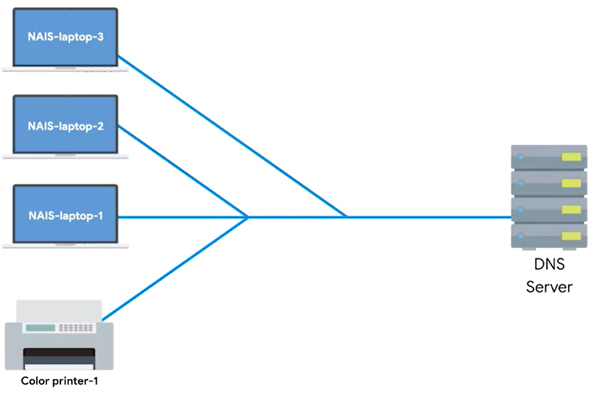

ISP almost always gives you access to a recursive name server as part of the service it provides.
but some buissnesses also run thier own DNS server for resolving internal IPs

Some internet organizations run what are called public DNS servers, which are name servers specifically set up so that anyone can use them for free.
most public DNSs are held by giant cooporations
google holds - 8.8.8.8 and 8.8.4.4 google's are one of the biggest
most public DNSs are avialable globaly through anycast
configuring DNSs to a reliable one is importent in order to avoid redirection to malicious sites

most public DNSs will respond to ICMP